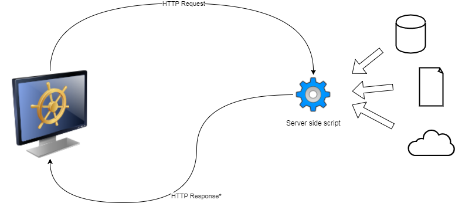

Projekt i implementacja systemów webowych
Wprowadzenie
Historia aplikacji webowych
1990 HTTP/HTTPS
1996 CSS
1993 CGI (Common Gateway Interface)
1995 PHP
1996 ASP
1997 Java Servlets
1999 JSP
2002 ASP.NET
2004 JSF
AJAX
Server side rendering

- Klient (przeglądarka) wysyła żądanie HTTP
- Serwer odpowiada wysyłając odpowiednie dokumenty
- Dokumenty (HTML, CSS, PNG, itp) mogą być generowane dynamicznie
Przykłady technologii
- CGI (Common Gateway Interface) - Skrypty lub programy uruchamiane za pośrednictwem serwera HTTP, standard określa sposób dostępu do parametrów żądania HTTP oraz sposób generowania odpowiedzi.
- PHP, ASP, JSP - Technologie skryptowe oparte na dokumentach (HTML) wzbogaconych o elementy dynamiczne.
- Java Servlets - Standardowy mechanizm obsługi protokołu HTTP w środowisku JEE (wszystkie frontendowe technologie JEE takie jak JSP, JSF, Java-Ws, Java-Rs bazują na serwletach).
- JSF, ASP.NET - Zaawansowane technologie frontendowe bazujące na architekturze komponentowej.
Zalety
- Niskie wymagania odnośnie przeglądarek (w teorii).
- Wysokie bezpieczeństwo (w teorii) dzięki odseparowaniu logiki aplikacji od dokumentów wynikowych.
- Dobra współpraca z wyszukiwarkami internetowymi (SEO).
- Jednakowa technologia dla frontendu i backendu.
Wady
- Trudności w uzyskaniu bardziej zaawansowanych efektów wizualnych (w praktyce często sięgano dodatkowo po Javascript).
- Konieczność przeładowywania całej strony przy zmianie widoku.
- Konieczność przechowywania stanu pomiędzy widokami (HTTP jest protokołem bezstanowym).
Server Side rendering with AJAX
Rich Internet Application
HTML5/Javascript - Single Page Webapp
Live coding example
function init() {
console.log("hello world");
}
init();
h1 {
color: blue;
}
<html><body>
<h1>Hello</h1>
</body></html>
Javascript

Cechy języka
- Przenośność
- Funkcyjność
- Obiektowość
- Jednowątkowość